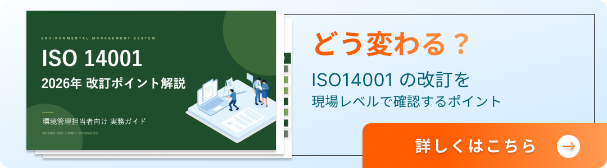

2024年、IAF（国際認定フォーラム）とISOは共同コミュニケを発行し、すべてのISO マネジメントシステム規格の審査において「気候変動」を考慮するよう求めました。この追補はISO14001（環境）だけでなく、ISO45001（労働安全衛生）にも及びます。
「うちの審査でも聞かれるのか」「具体的に何を準備すればいいのか」——そんな不安を感じているISO事務局や安全衛生責任者の方は少なくありません。本記事では、気候変動追補で求められる要求事項の整理から、審査で実際に聞かれる質問例、準備すべきエビデンスまでを体系的に解説します。
ISO 気候変動追補（IAF/ISO共同コミュニケ）とは？
発行の背景と経緯
2024年2月、IAFとISOは「気候変動に関する共同コミュニケ」を発行しました。これは、気候変動が組織の事業環境に与える影響を、マネジメントシステムの運用と審査の中で適切に考慮することを求めるものです。
背景には、気候関連のリスクがあらゆる産業に波及しているという認識があります。自然災害の激甚化、カーボンニュートラルに向けた各国の規制強化、サプライチェーン全体での排出量管理要求の拡大など、企業を取り巻く環境は急速に変化しています。こうした変化に対し、ISOマネジメントシステムの枠組みの中で組織が適切に対応できているかを確認する必要性が高まったことが、今回の追補につながりました。
なお、ISO45001については2024年に追補（Amendment 1）が正式発行されており、安全衛生の領域でも気候変動への対応が明確に求められるようになっています。
注釈：IAF（International Accreditation Forum） ── 世界各国の認定機関が加盟する国際組織。ISO認証の信頼性を担保する役割を持つ。
ISO14001・ISO45001それぞれへの影響範囲
気候変動追補は、特定の条項だけに影響するものではありません。ISO14001では、組織の状況の理解（4.1）、利害関係者のニーズと期待（4.2）、リスク及び機会（6.1）、環境目的（6.2）など、マネジメントシステムの根幹に関わる条項が対象となります。
ISO45001においても同様です。気候変動がもたらす労働安全衛生上のリスク——たとえば猛暑による熱中症リスクの増大、豪雨・台風の頻発による作業環境の悪化、災害時の避難計画の見直しなど——を、組織の状況把握やリスクアセスメントに組み込むことが求められます。
つまり、環境部門だけでなく安全衛生部門も、気候変動を自部門の課題として捉える必要があるということです。
2026年以降の審査でも引き続き問われる理由
この追補は一過性のトピックではありません。IAF/ISOの共同コミュニケは、認証審査のあり方そのものに対する方針変更です。2024年の発行以降、審査員は気候変動への対応状況を確認する観点を持って審査に臨んでおり、2026年以降もこの傾向は継続すると考えられます。
「今回の審査を乗り切ればいい」という一時的な対応ではなく、マネジメントシステムの中に気候変動の視点を組み込んでいく継続的な取り組みが必要です。
追補で求められる要求事項の整理（4.1 / 4.2を中心に）
4.1「組織の状況の理解」で気候変動をどう扱うか
条項4.1では、組織の目的に関連する外部・内部の課題を決定することが求められています。気候変動追補により、この「外部の課題」の中に気候変動関連の事項を含めて検討しているかが審査で確認されるようになりました。
具体的には、自社の事業活動に影響を与えうる気候関連の要因——規制動向（カーボンプライシング※1の導入、排出規制の強化など）、物理的リスク（洪水・高温・水不足など）、市場の変化（脱炭素要求の高まりなど）——を特定し、文書化しているかがポイントです。
※1 カーボンプライシング ── CO₂排出に価格を付けることで、排出削減を経済的に促す仕組み。炭素税や排出量取引制度が代表例。
4.2「利害関係者のニーズ・期待」で求められる視点
条項4.2では、利害関係者の要求事項を特定することが求められます。気候変動の文脈では、投資家や取引先からのサプライチェーン排出量の開示要求、自治体の気候変動適応計画への対応、従業員からの安全な労働環境確保の期待などが該当します。
とりわけISO45001の観点では、「気候変動によって労働者の安全衛生にどのような影響が生じうるか」について、利害関係者（労働者、労働組合、規制当局など）がどのような期待を持っているかを把握し、記録しておくことが重要です。
その他の条項（6.1リスク・機会、6.2目的・目標）との関係
4.1・4.2で特定した気候変動関連の課題は、6.1（リスク及び機会への取組み）に展開し、さらに6.2（目的及びその達成計画）へと落とし込む必要があります。つまり、「課題を認識している」だけでは不十分であり、それに対する具体的なアクションプランまで設計されているかが問われます。
「自社に該当するか」を判断するためのフロー
判断に必要な3つの観点
気候変動追補への対応が自社にどの程度関係するかを判断するには、以下の3つの観点から検討することが有効です。
1つ目は、業種・事業内容です。製造業、化学、エネルギー、建設といった業種は、気候変動の物理的リスク（高温・豪雨など）や移行リスク（規制強化・市場変化）の影響を受けやすく、対応の優先度が高いと考えられます。
2つ目は、拠点の所在地と数です。複数の工場や事業所を国内外に持つ企業では、拠点ごとに異なる気候リスクや地域規制への対応が求められます。
3つ目は、排出規模と取引先からの要求です。温室効果ガス排出量が大きい企業や、サプライチェーン上流・下流からの開示要求がある企業は、より具体的な対応が必要となります。
「該当しない」と判断する場合にも必要な記録
重要なのは、仮に「気候変動の影響は自社にとって重大ではない」と判断した場合でも、その判断プロセスと根拠を記録として残しておく必要があるという点です。審査では「検討した結果、該当しないと判断した」というエビデンスも確認対象になります。検討の痕跡がまったくない状態は、不適合の指摘を受けるリスクがあります。

リスク・機会の特定と目的・目標への落とし込み方
気候変動に関するリスク・機会の洗い出し方
リスクと機会の洗い出しにあたっては、物理的リスクと移行リスクの2軸で整理すると網羅性が高まります。
物理的リスクの例としては、猛暑日の増加による屋外作業の制限、豪雨による工場の浸水リスク、水資源の枯渇による生産への影響などが挙げられます。移行リスクとしては、カーボンプライシングの導入によるコスト増、環境規制の強化に伴う設備投資の必要性、取引先からの排出量削減要求などがあります。
一方、機会の視点も忘れてはなりません。省エネ設備の導入によるコスト削減、脱炭素関連の新規事業開発、気候変動対応を評価した取引先からの受注拡大などが考えられます。
目的・目標設定の実務ポイントと失敗しやすい点
リスク・機会を特定したら、それを条項6.2の目的・目標に落とし込みます。ここで失敗しやすいのは、目標が曖昧すぎるケースです。「気候変動に配慮する」といった抽象的な目標では、審査で「具体的に何をするのか」と問われた際に回答に窮します。
たとえば「2026年度中に全拠点の熱中症リスクアセスメントを実施し、対策計画を策定する」のように、期限・対象・アクションを明確にした目標設定が求められます。
安全衛生（ISO45001）側で見落としがちな気候リスク
ISO14001の文脈では気候変動対応が意識されやすい一方、ISO45001では見落とされがちです。しかし、猛暑による熱中症、豪雨時の通勤・作業リスク、感染症リスクの変化など、気候変動が労働安全衛生に与える影響は無視できません。安全衛生部門としても、自部門のリスクアセスメントに気候変動の視点を加えることが重要です。
審査で実際に聞かれる質問例とエビデンスの準備
審査員が確認する代表的な質問5選
気候変動追補に関して、審査で聞かれる可能性が高い質問の例を5つ挙げます。
「4.1の外部課題として、気候変動をどのように考慮しましたか？」——この質問は、気候変動を検討したプロセスそのものを確認するものです。
「気候変動に関連する利害関係者の要求事項は何ですか？」——4.2に関する質問で、具体的な利害関係者名とその要求を答えられる必要があります。
「気候変動に関連するリスクと機会をどのように特定しましたか？」——6.1に関する質問で、特定のプロセスと結果の両方が問われます。
「気候変動に対応する目的・目標は設定していますか？」——6.2に関する質問で、具体的なKPIや達成計画があるかが確認されます。
「労働安全衛生の観点で、気候変動によるリスクをどう評価していますか？」——ISO45001の審査で聞かれる質問で、環境側だけでなく安全衛生側の対応も求められます。
エビデンスとして有効な文書・議事録の具体例
審査では口頭説明だけでなく、客観的なエビデンスの提示が求められます。有効なエビデンスとしては、以下のようなものが挙げられます。
マネジメントレビューの議事録において、気候変動が議題として取り上げられた記録。外部・内部課題の一覧表に気候変動関連の項目が含まれている文書。リスクアセスメントの記録に気候関連リスクが記載されていること。目的・目標管理表に気候変動対応の目標が含まれていること。そして、これらの検討に関与したメンバーや日時が記録されていることも重要です。
「証拠不十分」と指摘されやすいケースと対策
よくある指摘事例として、「気候変動について検討した記録がない」「リスク一覧に気候関連の項目がない」「目標はあるが達成計画が不明確」といったものがあります。
対策としては、既存のマネジメントレビューやリスクアセスメントのプロセスに気候変動の検討項目を追加するのが最も現実的です。新たに大掛かりな仕組みを作る必要はなく、既存の枠組みの中に気候変動の視点を「組み込む」ことがポイントです。
気候変動追補への対応、自社だけで進めるのに不安はありませんか？
安全衛生・環境法令は日々変化しており、どの規制が自社に影響するのかを正確に把握し続けるのは容易ではありません。EHS Researchでは、安全衛生・労働安全衛生に関する法令の単発調査を受付中です。無料で実際のレポートをご確認いただけます。
法令改正キャッチアップの課題と効率化のヒント
なぜ自社リソースだけでは追いつけないのか
ISO審査対応に限らず、安全衛生・環境分野の法令は頻繁に改正されます。国内法だけでなく、海外拠点がある場合は各国の規制動向も把握する必要があり、さらに地方自治体独自の条例まで含めると、その範囲は膨大です。担当者が日常業務の合間にすべてをカバーするのは現実的ではありません。
属人化・Excel管理の限界と実際に起きるリスク
多くの企業では、法令管理が特定の担当者の知識と経験に依存しています。その担当者が異動や退職した場合、ノウハウが引き継がれず対応が滞るリスクがあります。またExcelや紙ベースでの管理では、法令改正の見落としや対応漏れが発生しやすく、内部監査や外部審査で指摘を受けるケースも少なくありません。
法令チェックを仕組み化する方法
こうした課題を解決するには、法令管理を「人の記憶と努力」に頼る体制から、「仕組み」で回せる体制へ移行することが重要です。
たとえば、自社の設備やサービス、製品情報を登録するだけで、関連する法改正や規制変更に応じた対応事項をリストアップできるツールを活用すれば、属人化のリスクを抑えつつ、法令改正への即応性を確保できます。他社では調査からレポーティング、対応方針の策定まで1〜3ヶ月かかるケースもありますが、ツールの活用により最短1週間程度で対応の方向性を把握することも可能です。
まとめ｜気候変動追補への対応は「気づいてからでは遅い」
ISO14001/45001における気候変動追補は、2024年の発行以降、審査の標準的な確認項目となっています。対応のポイントを改めて整理すると、4.1・4.2で気候変動を外部課題・利害関係者要求として明確に位置づけること、リスク・機会を具体的に特定し目的・目標に落とし込むこと、そして検討プロセスと結果を議事録や文書としてエビデンス化しておくことの3点に集約されます。
安全衛生・環境法令は常に変化しており、気づいてからでは対応が後手に回ります。自社のリソースだけでは追いつかない法令改正のキャッチアップを、仕組みとして整えておくことが、これからのEHS管理には不可欠です。
安全衛生・環境法令の単発調査を無料で試せます
気になる法令や自社の設備・製品を登録するだけで、影響のある法改正と対応事項をスピーディにリストアップ。他社では1〜3ヶ月かかる調査も、最短1週間で対応の方向性を把握できます。
出典：
- IAF/ISO 共同コミュニケ「Climate Change」（2024年2月発行）
- ISO 45001:2018 Amendment 1（2024年発行）